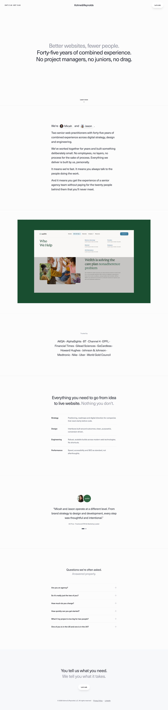
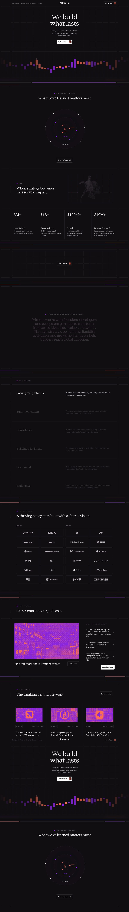
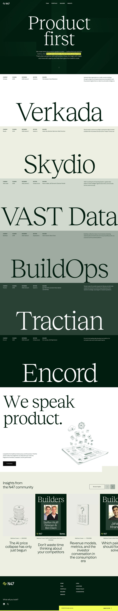
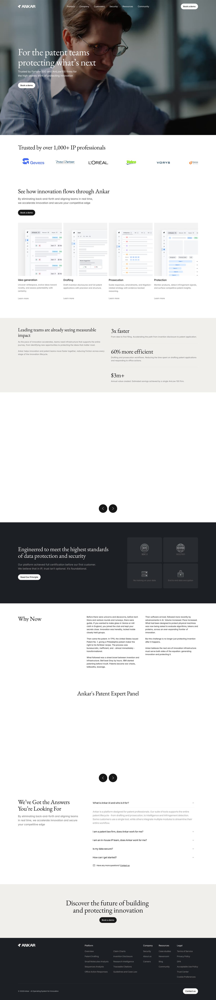
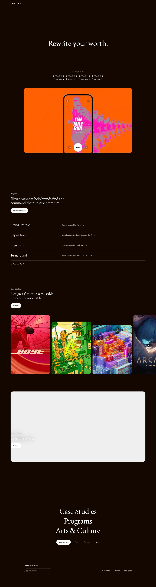
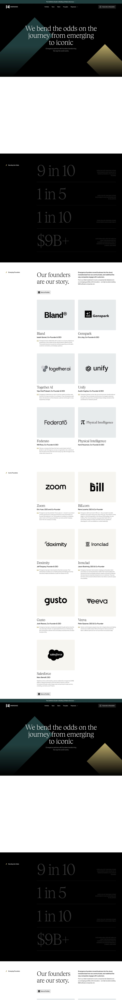
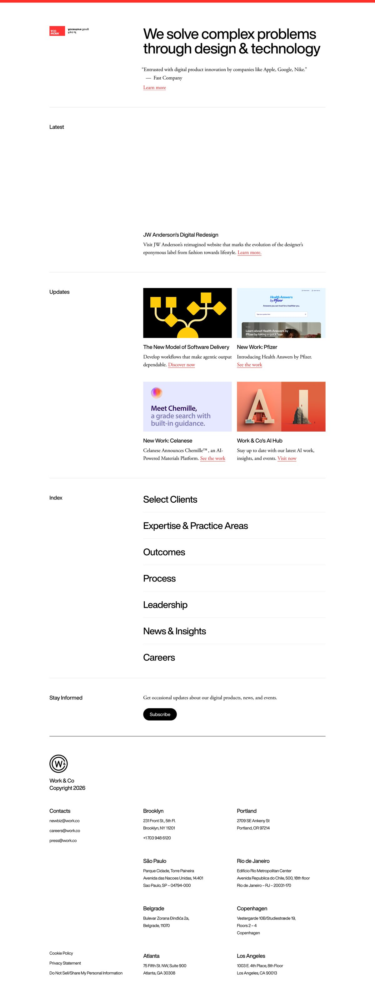
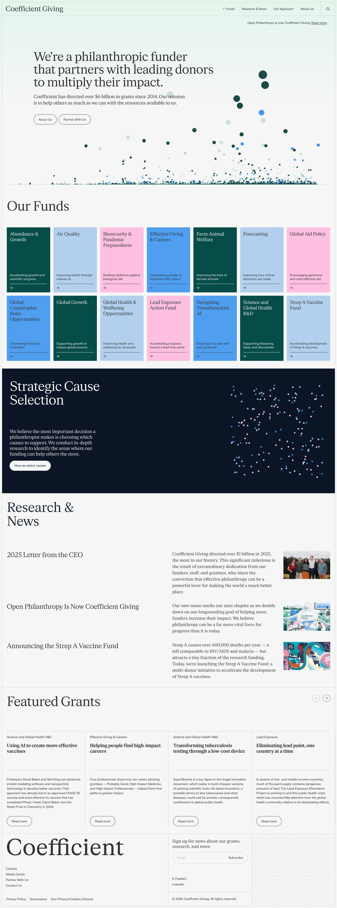

Moodboard
Nine sites I like, and what I want to take from each.
None of these is a template. Nothing here gets copied. Each one is on this page because of one specific thing it does well, and that one thing is all I want to carry across.
You will see photographs and moving pictures on some of these. Your site will have neither. It is built from lettering, fine lines and a few simple symbols. Not one of these nine uses bought-in stock photography either, which is the thing you told me you never wanted to see.
Each screenshot is the whole homepage from top to bottom, so they are long, and small on this page. Open any of them to see it properly. The sites you sent me are behind this too, even where they are not shown here.
Your site will use both light and dark. Nothing on it will move, and the opening screen will be centred, with no photograph and no video.

Kohne & Reynolds
The first screen holds one quiet sentence and nothing else. It reads as confidence rather than as a gap, which is a hard thing to pull off.
- What I liked
- the first screen carries one line and stops there.
- the background is a shade off pure white, which is easier on the eye.
- the large text is set light rather than heavy. Nothing shouts.
Visit the website

Primora
Thin lines run through the whole page and hold every part of it in place. Of the nine, this is the closest to the mockup you sent me.
- What I liked
- thin lines box in each section, so nothing drifts.
- one line weight, one colour, all the way through.
- What we will not use
- the same dark from top to bottom, with nothing to break it up.
Visit the website

N47
One enormous headline, set very light, carries the whole first screen on its own.
- What I liked
- huge text that still feels quiet, because the weight is so light.
- a deep green section that sets itself apart without shouting.
- a warm off-white for the rest, rather than plain white.
Visit the website

Ankar
Ordered and calm. You can work out what the business does at a glance, without reading much.
- What I liked
- it moves between light and dark, each section doing a different job.
- small symbols drawn in a single thin line, never filled in.
- text kept to a narrow column, so it stays easy to read.
- What we will not use
- the building video across the top.
Visit the website
Rogo
A serious finance brand running almost no pictures at all. Nearly everything on it is drawn rather than photographed.
- What I liked
- dark sections used to give weight, not for decoration.
- simple line symbols standing in for pictures.
- headings set tight, so each one reads as a single block.
- What we will not use
- the moving picture behind the first screen.
Visit the website

COLLINS
Warm blacks rather than cold ones, and a narrow column of text. It feels considered rather than decorated.
- What I liked
- the blacks lean warm, which is softer than a true black.
- text set in a narrow column, about half the width of the page.
- What we will not use
- the large picture panels.
Visit the website

Emergence Capital
A light page with deep colour panels set into it. This is the panel idea you described to me, built by someone else first.
- What I liked
- panels of deep green and gold marking off sections on a light page.
- only two lettering styles in the entire site.
- a first screen that is centred, and calm about it.
Visit the website

Work & Co
Five barely different shades of off-white are all it uses to separate one section from the next. No lines, no boxes, no borders.
- What I liked
- sections told apart by shade alone.
- how little it needs in order to do the job.
Visit the website

Coefficient Giving
Everything sits inside ruled lines. Nothing floats loose anywhere on the page.
- What I liked
- every block is ruled on all four sides, not just underlined.
- two line weights only, one firm and one soft.
- What we will not use
- the busy dotted picture at the top.
Visit the website
Questions on the rest are coming separately.